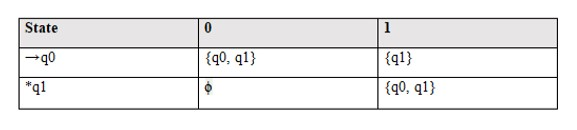
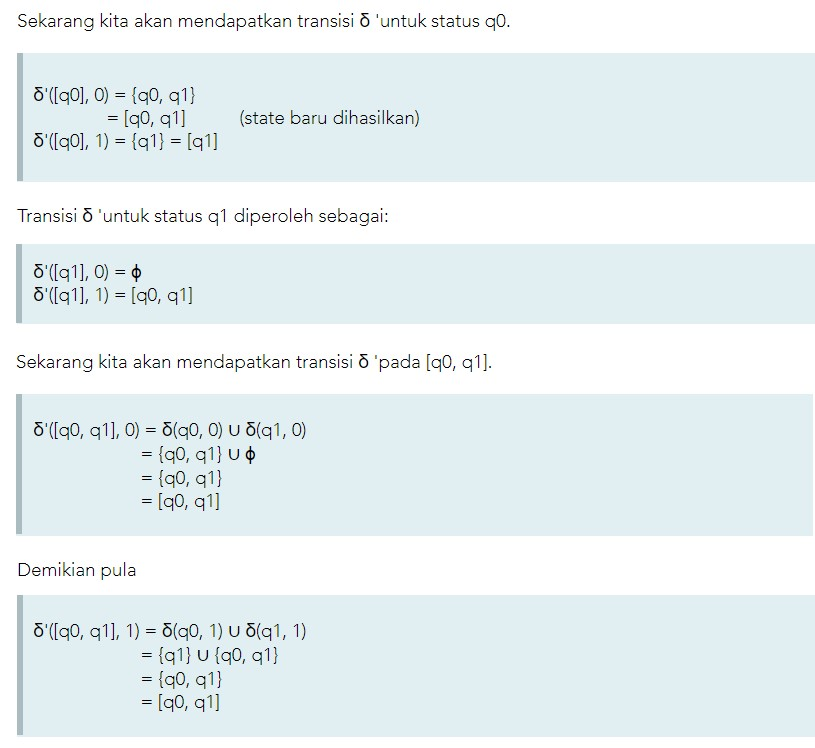
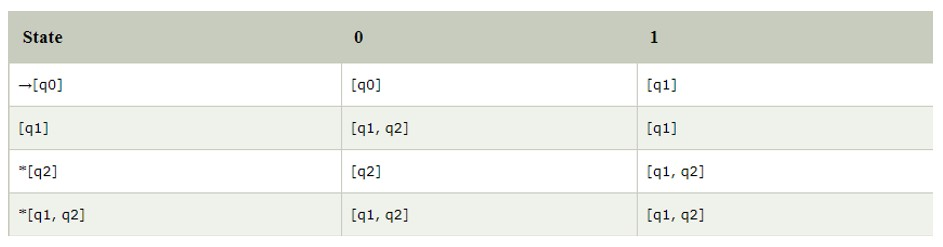

Syahril Saputra
Konversi NFA ke DFA
Teori Komputasi adalah bidang ilmu komputer yang berkaitan dengan bagaimana algoritma memecahkan masalah. Ia memiliki tiga cabang, tepatnya; teori kompleksitas komputasi, teori komputasi dan teori otomatisasi.
Otomasi atau teori otomasi adalah studi tentang mesin atau sistem matematika abstrak yang dapat digunakan untuk memecahkan masalah komputasi. Ini terdiri dari status dan transisi otomatis, ketika dilihat oleh tanda atau huruf, itu mengasumsikan status dan karakter saat ini sebagai input, dan membuat peralihan.
Ada beberapa kelas dalam teori otomatisasi atau otomatisasi, termasuk Deterministic Finite Automata (DFA) dan Nondeterministic Finite Automata (NFA). Kedua kelas ini adalah fungsi lompatan otomatis atau pistol. Selama transisi, DFA n tidak dapat menggunakan string kosong dan dapat diartikan sebagai satu mesin. Jika garis berakhir pada tingkat yang tidak dapat diterima, DFA menolak. Mesin DFA dapat dibangun dengan setiap input dan output. DFA hanya memiliki satu transisi status untuk setiap karakter alfabet, dan hanya ada satu status akhir untuk karakter itu, yaitu, untuk setiap karakter yang dibaca, ada satu status yang sesuai dalam DFA. Keanggotaan DFA lebih mudah untuk diverifikasi tetapi lebih sulit untuk dibangun. Pelacakan balik diizinkan dalam DFA dan membutuhkan lebih banyak ruang daripada NFA. Mundur tidak selalu diizinkan di NFA. Dalam beberapa kasus itu mungkin, dan dalam kasus lain tidak. Membangun NFA lebih mudah dan juga membutuhkan lebih sedikit ruang, tetapi tidak mungkin untuk membangun mesin NFA untuk setiap entri dan keluar.
Ini dipahami sebagai beberapa mesin kecil yang menghitung pada saat yang sama, dan lebih sulit untuk memverifikasi keanggotaan. Ini menggunakan program "String String Transition", dan ada banyak contoh berikutnya untuk setiap negara dan tanda tangan. Dimulai dengan case khusus dan membaca simbol, dan kemudian pistol mendeteksi yang berikutnya yang tergantung pada input saat ini dan kejadian lainnya. Dalam hal penerima, NFA menerima kabel dan menolaknya sebaliknya.
Di bagian ini, kita akan membahas metode untuk mengubah NFA menjadi DFA yang setara. Di NFA, ketika input tertentu diberikan ke status saat ini, mesin pergi ke beberapa status. Ini dapat memiliki nol, satu atau lebih dari satu gerakan pada simbol input tertentu. Di sisi lain, di DFA, ketika input tertentu diberikan ke status saat ini, mesin hanya beralih ke satu status. DFA hanya memiliki satu gerakan pada simbol masukan tertentu.
Misalkan, M = (Q, ∑, δ, q0, F) adalah NFA yang menerima bahasa L (M). Harus ada DFA ekivalen yang dilambangkan dengan M '= (Q', ∑ ', q0', δ ', F') sehingga L (M) = L (M ').
Langkah-langkah untuk mengubah NFA menjadi DFA
Langkah 1: Awalnya Q '= ϕ
Langkah 2: Tambahkan q0 NFA ke Q '. Kemudian temukan transisi dari status awal ini.
Langkah 3: Dalam Q ', temukan kemungkinan set status untuk setiap simbol input. Jika kumpulan status ini tidak ada di Q ', maka tambahkan ke Q'.
Langkah 4: Di DFA, status akhir adalah semua negara bagian yang berisi F (status akhir NFA)
Contoh
Konversi NFA berikut menjadi DFA
Solusi: Untuk diagram transisi yang diberikan, pertama-tama kita akan membuat tabel transisi.
 
Tentang Saya